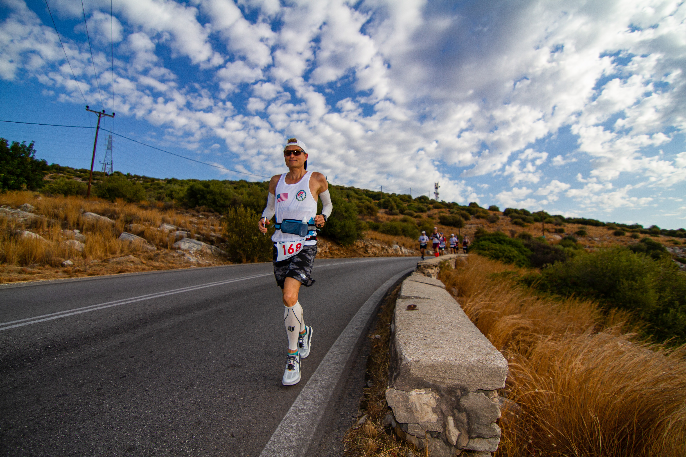

Race Overview
Spartathlon is a 246-kilometre (153 mi) ultramarathon race held annually in Greece since 1983, between Athens and Sparti, the modern town on the site of ancient Sparta. The spartathlon is based on the run of Pheidippides, who ran from Athens to Sparta before the Battle of Marathon in a day and a half to seek aid against the Persians.
Fastest Finish
The winner of the first Spartathlon, Yiannis Kouros, still holds the record for fastest time at 20 hours and 25 minutes.
Race Specifics
The Spartathlon is usually held around late September. Runners have 36 hours to run 245 kilometres (152 mi), roughly the equivalent of six consecutive marathons, between Athens and Sparti, the site of ancient Sparta. Runners have to deal with the Greek heat in the day, the cold of the night, and the mountainous terrain. There are 75 checkpoints along the way, where runners are disqualified for safety reasons if they fail to meet time cut-offs. Any non-finishers are picked up by a bus and taken to Sparta together.
My Spartathlon Experience:
- Got overwhelmed by the pressure of the event...
- Got extremely dehydrated and could not finish...
- Was honored to represent USA amongst some of the best runners in the world.
- Best Four Finishing Times
- 20hr25min
- 20hr29min
- 21hr53min
- 21hr57min